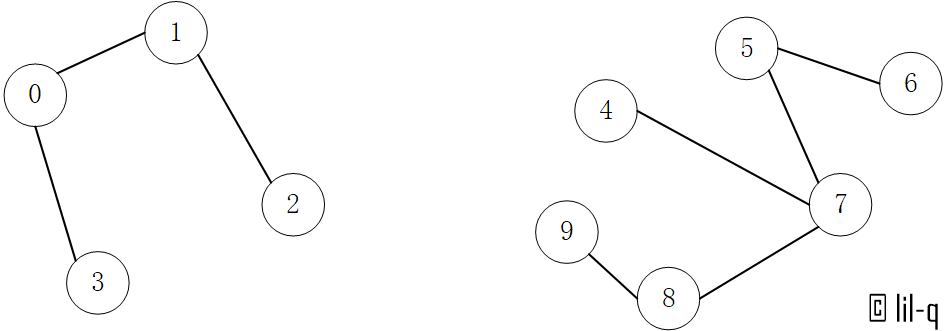

定义
并查集是一种树形的数据结构，顾名思义，它用于处理一些不交集的 合并 及 查询 问题。 它支持两种操作：
- 查找（Find）：确定某个元素处于哪个子集；
- 合并（Union）：将两个子集合并成一个集合。
也就是说，不支持集合的分离、删除。
Quick-Find算法
以下图为例，连通关系为[(1,2), (0, 1), (0, 3), (4, 7), (5, 6), (5, 7), (7, 8), (8, 9)]。

首先初始化所有节点，认为它们属于一个组，因此不连通的节点必然就属于不同的组：
| element | 0 | 1 | 2 | 3 | 4 | 5 | 6 | 7 | 8 | 9 |
|---|---|---|---|---|---|---|---|---|---|---|
| group number / id | 0 | 1 | 2 | 3 | 4 | 5 | 6 | 7 | 8 | 9 |
输入pair(1, 2)，则将所有group number为0和1的element改为一致（都为0或都为1，这里以较小值为例）。
| element | 0 | 1 | 2 | 3 | 4 | 5 | 6 | 7 | 8 | 9 |
|---|---|---|---|---|---|---|---|---|---|---|
| group number / id | 0 | 1 | 1 | 3 | 4 | 5 | 6 | 7 | 8 | 9 |
输入pair(0， 1)，这里就需要把element 1和element 2的group number都改为0，：
| element | 0 | 1 | 2 | 3 | 4 | 5 | 6 | 7 | 8 | 9 |
|---|---|---|---|---|---|---|---|---|---|---|
| group number / id | 0 | 0 | 0 | 3 | 4 | 5 | 6 | 7 | 8 | 9 |
正因为每次都需要找到所有的特定group number的element，所以union的时间复杂度为O(N)，find的时间复杂度为O(1)。N为element的个数，下同。
代码
1 | class QuickFind(object): |
Quick-Union算法
对于只需要实现查找和合并的并查集，O(n)的时间复杂度还是太高了，当时间复杂度需要降低到对数级，我们自然想到了树这个数据结构。由于并查集初始化中每一个element对于一个group number，所以可以通过数组中的跳转来实现树的寻找父节点功能。以下图为例，最开始每一个element的父节点都是自身，每次查找沿着父节点向上， 直到根节点。每次合并把找到的两个根节点的其中一个设置为另一个的父节点。

union和find的时间复杂度取决于树的高度。
代码
1 | class QuickUnion(object): |
注意：此时self.id存放的不再是每个元素的组别而是父节点。
Weighted Quick-Union 算法
既然采用了树的结构，就有可能出现极端情况，是的树操作的时间复杂度退化成O(N)。为了避免这种情况，常规方法是使用平衡树，而对于并查集，只需要在union时，选择将小的树合并到大树上就可以了。

理论上在平衡树合并两个树时，应当用根的高度来衡量两个树的大小，但是这里使用根节点的子孙节点的数量来衡量，union和find的时间复杂度接近于O(log N)。这是因为这个方法还可以优化，通过路径压缩可以将union和find的时间复杂度降低至O(1)，而这样做会改变根的高度。
代码
1 | class WeightedQuickUnion(object): |
输出self.sz可以看到id = 1和id = 5的组别包含了所有元素，id = 4组中的(4, 7)实际上已经移动到id = 5组中。
1 | size: [1, 4, 1, 1, 2, 6, 1, 1, 1, 1] |
Weighted Quick-Union With Path Compression 算法
第一种方法是在find方法的执行过程中保存所有路过的中间节点到一个数组中，然后在while循环结束之后，将这些中间节点的父节点指向根节点。但是这个方法在find操作很频繁时会频繁生成中间节点数组，相应的分配销毁的时间自然就上升了。另一种方法是在寻找q的根节点的同时不断改变父节点，相当于在寻找根节点的同时，不断地将q移动到上一级的节点下，对路径进行了压缩，使整个树结构扁平化。相应的实现如下，实际上只需要在find方法中添加一行代码。
1 | def find(self,p): |
这样self.id中保存的既是个元素的组别又是各元素的父节点，正因为如此union和find的时间复杂度降低到了O(1)。
1 | final parent/id list is 1,1,1,1,5,5,5,5,5,5 |
总结
随着一步步地深入，我们最终将查并集union和find的时间复杂度降低到了O(1)。本文中的四种算法的时间复杂度如下表所示。
| Algorithm | Constructor | Union | Find |
|---|---|---|---|
| Quick-Find | N | O(N) | O(1) |
| Quick-Union | N | Tree height | Tree height |
| Weighted Quick-Union | N | near to O(log N) | near to O(log N) |
| Weighted Quick-Union With Path Compression | N | Very near to O(1) | Very near to O(1) |
需要注意Path Compression是将各节点压缩到根节点下，所以Weighted仍然有意义。当然如果还需要输出连通路径，这个方法是没办法实现的，需要BFS或DFS算法来实现。
错误与不足请不吝指正，转载请注明，谢谢